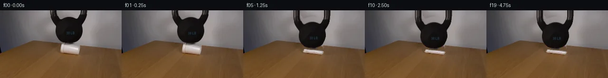

![首帧]()

Round 00
2026-11-05T20:00:28.018623+00:00像素候选变化代码 +180/−0inspection 更新
pixels b30eeeba4ee4ad43 · code ab61c1303ed12a3b
查看本轮 generate.py 真实 diff
--- previous/generate.py
+++ current/generate.py
@@ -0,0 +1,180 @@
+"""Local photographic pixel warps for the PixelWorld-Text continuation.
+No image viewer, network, pretrained model, renderer, or external asset is used.
+"""
+from pathlib import Path
+import json
+import numpy as np
+from PIL import Image, ImageDraw
+from scipy.ndimage import map_coordinates, gaussian_filter, binary_dilation
+from artifact_io import save
+
+ROOT = Path(__file__).resolve().parent
+W, H = 256, 144
+SOURCE = np.asarray(Image.open(ROOT/'first_frame.png').convert('RGB'), dtype=np.float64)
+Y, X = np.mgrid[:H, :W].astype(float)
+DROPS = np.array([0,.4,1.2,2.6,6.0,10.6,11.8,11.3,11.6,11.45,11.5]+[11.5]*9)
+
+
+def polygon_alpha(points, scale=8):
+ im = Image.new('L', (W*scale,H*scale))
+ ImageDraw.Draw(im).polygon([(round(x*scale),round(y*scale)) for x,y in points], fill=255)
+ return np.asarray(im.resize((W,H),Image.Resampling.LANCZOS),dtype=float)/255
+
+
+def sample(a, sx, sy, order=1):
+ coords=np.array([sy,sx])
+ if a.ndim==2:
+ return map_coordinates(a, coords, order=order, mode='nearest', prefilter=False)
+ return np.stack([map_coordinates(a[...,c],coords,order=order,mode='nearest',prefilter=False) for c in range(3)],axis=-1)
+
+
+def blend(dst, premult, alpha):
+ return dst*(1-alpha[...,None])+premult
+
+
+def make_background():
+ # Gray-wall rows interpolated from actual source strips on either side.
+ l=SOURCE[:,96:104].mean(axis=1)
+ r=SOURCE[:,185:193].mean(axis=1)
+ l=gaussian_filter(l, (1.2,0));r=gaussian_filter(r,(1.2,0))
+ q=np.clip((X-100)/89,0,1)
+ wall=l[:,None,:]*(1-q[...,None])+r[:,None,:]*q[...,None]
+ # Fine gray texture is taken from another visible wall strip of this frame.
+ walltex=SOURCE[:,185:230]-gaussian_filter(SOURCE[:,185:230],(1.3,1.3,0))
+ wall+=walltex[:,(X[0].astype(int)-100)%45]*.45
+ # Wood rows borrow their tone from either side of the cup, with real grain.
+ wl=SOURCE[:,110:123].mean(axis=1);wr=SOURCE[:,176:189].mean(axis=1)
+ wl[:81]=wl[81];wr[:81]=wr[81]
+ qwood=np.clip((X-118)/64,0,1)
+ table=wl[:,None,:]*(1-qwood[...,None])+wr[:,None,:]*qwood[...,None]
+ patch=SOURCE[99:139,105:190]
+ texture=patch-gaussian_filter(patch,(1.0,1.7,0))
+ table+=texture[(Y.astype(int)-70)%40,(X.astype(int)-120)%85]*.8
+ edge=66+.13*(X-90)
+ table_fraction=np.clip((Y-edge+.5)/2.0,0,1)
+ return wall*(1-table_fraction[...,None])+table*table_fraction[...,None]
+
+
+def make_layers():
+ background=make_background()
+ # Derive a matte for the photographed iron from RGB contrast. The domain
+ # excludes the tabletop. Keep the handle hole transparent.
+ lum=SOURCE.mean(axis=-1)
+ domain=(X>=103)&(X<=184)&(Y<=71)
+ left=np.interp(Y[:,0],[0,8,18,24,32,44,52,60,66,69,71],[104,105,107,111,116,115,117,122,129,136,143])
+ right=np.interp(Y[:,0],[0,8,18,24,32,44,52,60,66,69,71],[183,182,180,177,172,174,171,167,162,157,154])
+ domain&=(X>=left[:,None])&(X<=right[:,None])
+ core=domain&(lum<83)
+ support=binary_dilation(core,iterations=1)&domain
+ wall_lum=background.mean(axis=-1)
+ iron_alpha=np.clip((wall_lum-lum)/np.maximum(wall_lum-48,10),0,1)*support
+ iron_alpha[lum<69]=support[lum<69]
+ # The clipped handle sides continue vertically above the source crop.
+ # Their unseen upper crossbar remains outside the fixed camera frame.
+ cup_alpha=polygon_alpha([(130,70.4),(136,71.6),(152,73.1),(162,74.8),
+ (166.5,77),(167.4,81),(167,87.5),(165.9,93.4),(161.7,94.4),
+ (155,94),(143,92.7),(131,90.7),(127.2,88.8),(126.5,82),
+ (127.8,76),(129,72)])
+ # Soft source shadow below the cup is part of the foam/table contact.
+ cup_alpha=np.where((X<124)|(X>170)|(Y<69)|(Y>96),0,cup_alpha)
+ iron_support=iron_alpha>0
+ cup_support=cup_alpha>0
+ clean=SOURCE.copy()
+ clean[iron_support|cup_support]=background[iron_support|cup_support]
+ # Foreground premultiplication subtracts the estimated backdrop so that
+ # the undeformed layers recompose the source, including blurred edges.
+ iron_pm=np.where(iron_support[...,None],SOURCE-clean*(1-iron_alpha[...,None]),0)
+ cup_pm=np.where(cup_support[...,None],SOURCE-clean*(1-cup_alpha[...,None]),0)
… diff truncated; 93 more lines …